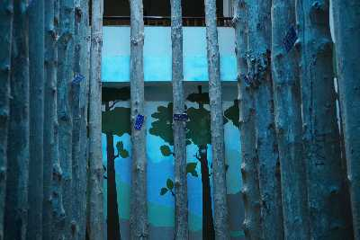

Malappuram
Malappuram district has a rich and vibrant history. The military headquarters of the Zamorins of Kozhikode since ancient times, this district was the site for many of the Mappila Revolts (uprising against the British East India Company in Kerala) between 1792 and 1921. Malappuram literally means a land atop hills and the region is enriched by three great rivers flowing through it - the Chaliyar, Kadalundi and the Bharathapuzha. Malappuram has made numerous contributions to the cultural heritage of Kerala. A famous centre for Hindu-Vedic learning and Islamic philosophy, the temples and mosques of this region are well known for their spectacular festivals.Along with historic monuments and diverse natural attractions, a range of cultural and ritual art forms add to its charm as a destination.
Tourist Attractions

Nilambur Teak Museum
Established in 1994, Nilambur Teak Museum is the first teak museum in the country. They have a collection of information in the form of articles and comprehensive documents that also mention the historic and artistic value of the wood.
Kottakunnu
Kottakkunnu is a mesmerising garden situated on a hill. Its beauty is often compared with the picturesque Marine Drive in Mumbai. The attraction has a Water Park, an Adventure Park, an Art Gallery, 16D cinema, an Open Air Theatre and a Balloon Park. These amusements make Kottakkunnu a perfect picnic spot.